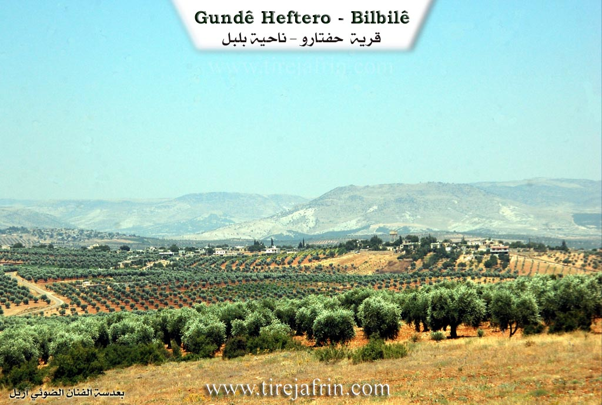
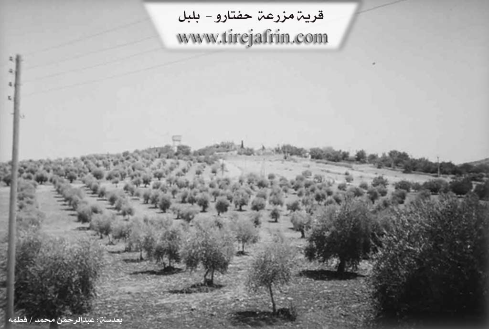

General Information
Nahiya (Subdistrict)
Bilbilê
Also Known As
Al-Dab', Haftaru, Hefter, Hevtêr, الضبع, حفتارو, Ḧeftêr, حفطارو
Tribes
Rûşîn
Families, Clans, etc.
Heftaro, Hemû, Keftar, Sosî
Photos


Basic Information about Ĥeftêr
Source: Ax û Welat
Etymology: Derived from the legendary ancestor Hûrê Heft or Wurê Hefter, the phrase Heft dar meaning seven trees, or a folktale about an ancestor killing a hyena known as Haftar
Springs: Kanî Sorkê
Hills: Çiyayê Keleşîr, Çiyayê Gewrik, Keleha Hûrî
Ruins: Arî çopliyê
Other Landmarks: Geliyê Rêz, Geliyê Horî, Rêya Hevrîşim
Summaries
I. Summary from TirejAfrin Site (English) of Ĥeftêr
Source: https://www.tirejafrin.com/site/kura%20afrin%20%20%20bilbile%20-%20haftaro.htm
It is stated in the book جبل الكرد (عفرين) دراسة جغرافية Çiyayê Kurmênc (Efrîn): A Geographical Study: Gund Ĥeftr, Heftaro, The Hyena /115 inhabitants 540m/:
It means "The Hyena" in Kurdish (heftar), which was a nickname of one of its residents, and his descendants still live there.
It is a small village located on the western slope of a limestone height.
It is stated in the book عفرين .... نهرها وروابيها الخضراء Efrîn... Her River and Her Green Hills: Heftaro: A farm in Çiyayê Kurmênc following the Bilbile sub district, Efrîn region, Heleb governorate. It is a small farm located in a plain and on a high hill, surrounded by olive trees from all sides. It is located about 14km southeast of the town of Bilbile.
It is bordered to the north by a fertile plain planted with olive trees and the village of Ebûdan and Hayoxlî. To the south, the valley of Sêlî and a very high mountain range called Çiyayê Şêx Xurz, the village of Omer Simo, Se'rincêk, and the citadel of Nebî Hûrî. To the west, the valley of Sêlî planted with olive trees and the village of Şêx Xurz and Elî Caro. To the east, just meters away, is the village of Ebûdan.
The number of its houses reaches about 15 houses and its age is about 35 years. It is recent, as its stone and cement dwellings were founded in the year 1975 AD. It consists of one family, the Heftaro family, named after the designation of the farm.
An electricity network is available there, and the asphalt road passes near it to Ebûdan and the village of Şêx Xurz. Its residents work in olive and grain cultivation, alongside raising sheep and goats due to the mountainous nature located on the southern side of the village and the available pastures.
Sources of Information:
- Book: جبل الكرد (عفرين) دراسة جغرافية Çiyayê Kurmênc (Efrîn): A Geographical Study by د. محمد عبدو علي Dr. Mihemed Ebdo Elî.
- Book: عفرين .... نهرها وروابيها الخضراء Efrîn... Her River and Her Green Hills by للكاتب عبدالرحمن محمد The Writer Ebdulrehman Mihemed from the village of Qetme.
- Studies of Navenda Tirej Soft / Ebdulrehman Hacî Osman.
- Some residents of the villages.
Preparation and Execution: Manager of the site Tirej Efrîn: Ebdulrehman Hacî Osman 20/12/2013
II. Summary of Ĥeftêr from Ax û Welat
Source: https://www.youtube.com/watch?v=UUYFt1-G5Bc
The village of Heftêr, located in the Bilbil district of the Afrin region, holds a rich history deeply connected to the geography of Çiyayê Kurmênc. The origins of the village name are the subject of several local legends. Some elders believe it stems from Hûrê Heft or Wurê Hefter, a founding figure who stuck a stick into the ground to mark the site. Others suggest it comes from Heft dar, meaning seven trees that once stood there. A more dramatic theory involves a hyena, or Haftar, which was strangled by an ancestor near a cave during a failed peace mediation. The residents trace their lineage primarily to the Rûşîn tribe. The village population originated from Şêx Xurzê Jêrin, specifically from three brothers who divided their property. The Sosî family is noted as one of the original lineages, while another branch known as Keftar migrated to Huretanê.
Historically, Heftêr occupied a strategic position along an ancient trade route, identified by locals as part of the Rêya Hevrîşim or Silk Road, which connected Ezaz, Kilis, and Afrin. A vital landmark on this route was the Sarnînc, a historical cistern or well located at a mountain pass between Heftêr and the border. Before modern roads and machinery, this spot served as a resting point for travelers and a neutral ground for social exchanges between the north and south. It was specifically used for exchanging brides between families from different areas, such as Marsawa, Qirnê, and Diraqliya. Elders recount specific events at the sarnînc (well), including a dispute during a bride exchange involving the people of Marsawa that led to a conflict.
The landscape around Heftêr is defined by significant natural features like Geliyê Kanî Sorkê and Çiyayê Gewrik. The most culturally significant peak is Çiyayê Keleşîr. This mountain possesses a reputation for fertility and sustenance; locals believe that if nursing women or livestock with low milk supply visit the mountain and offer a sacrifice, their milk production will increase. The village also contains historical ruins such as Arî çopliyê, described as an ancient workshop or munitions site.
The community is known for its social cohesion and hospitality. During the Armenian Genocide of 1914, the village of Heftêr provided refuge to fleeing Armenians, even constructing housing for them and integrating them into the community. Culturally, the village maintains a strong tradition of communal dining during Eid, a practice inherited from their ancestors who used to gather at the shrine of Nebî Hûrî. Notable figures include the poet Ehmed Heftaro, also known as Hemû, a formidable character whose authority kept order in the village, and religious scholars like Îbrahîmê Heftêr and Mûradê Heftêr. Today, the village continues to emphasize education and the revival of the Kurdish language, with mothers attending classes to learn their mother tongue alongside the younger generation.
II. Ax û Walat Book 1
209
THE VILLAGE OF HEFTÊR
14.12.2016
The village of Heftêr is affiliated with the Bilbilê district of the Efrîn canton, located 12 km southeast of the town of Bilbilê and 50 km northeast of the city of Efrîn.
It is said that a person named Horê threw seven hares to the ground and killed them. Afterwards, his name became Horê Heftêr, and thus the name of the village also became the village of Heftêr.
Another view says that the sheikhs or their religious leaders used to go to the village of Bablîtê on the back of seven mules to gather with the religious leaders and perform zikir.
210
Another view says that the name of the village comes from ((Heft dar - Seven Trees)) as there were 7 trees at the current site of the village.
Horê Heftêr was the first person to settle in the village. He had 2 sons, Mihemed and Şêxo, from whom the village was populated. All the people of the village are from the Roşî tribe, and many surrounding villages are from the same tribe.
The village of Heftêr was built on a high place, about 5 km northwest of the Keleşîr mountain. To the south of the village are the Kanî Sorkê valley and the Keleşîrê mountain, to the west is Erdê Sor, the villages of Şêxorzê and Jarê, to the north is the Gewrikê mountain, the village of Kurdo, and to the east are the Rêz valley, and the villages of Ebîdan and Mersa.
There are 45 houses and nearly 1000 people living there. Due to migration, the village did not become large and expansive. Therefore, many people have settled in the city of Efrîn.
The people of the village make their living from agriculture and servicing the olive fields is of the first degree, and some families also own livestock. There is an olive press and 2 sewing workshops in the village, with nearly 10 people working there. There are 4 sewing workshops and a shoe workshop in Efrîn where nearly 70 people from the village of Heftêr work. Nearly 20 people work in the institutions and bodies of the Autonomous Administration.
211
The people of the village of Heftêr have good and harmonious relations with each other, so during holidays, all the people of the village visit each other and solve their social problems.
Arê Çopliyê was used as a workshop for making ammunition for weapons in ancient times.
Îbramê Heftêr was a religious man and at the same time an influential social figure who was respected by all.
Muradê Heftêr was also a scholar of the Islamic religion and has done a lot of work and effort for his community.
The school of Ş. Cuma is a joint school between the villages of Heftêr and Ebîdanê. The village commune is named Ş. Dîrok.
It is worth mentioning that during the Armenian genocide in 1914, many people from the Armenians sought refuge in the village of Heftêr, and the people of the village welcomed them and hosted them and sheltered them among themselves to the extent that a house was built for them.
It is known that the song (Hemo), which is one of the famous songs in Efrîn, was about Hemkê Heftêr, because he was a clever and heroic person.
Transcriptions and Subtitles
| Source | Video | Subtitles | Transcript |
|---|---|---|---|
| Ax û Welat 1 | Watch Video | Download SRT | View Transcript |
Foundation/Origin Information of Ĥeftêr
It consists of one family, the Haftaru family, after whom the farm is named.
Source: TirejAfrin Site
Possible Village Name Meaning of Ĥeftêr
Means "hyena" in Kurdish, which was a nickname for one of its inhabitants whose descendants still live there.
Source: TirejAfrin Site